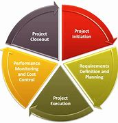

|  |
Doug AltermattEntreprenuer and Software Developer. With a strong entreprenuer spirit Doug has embarked on a mission to become an iOS and Web Developer to help bridge the gap of Technology that the service areana seems to be facing. |
| Dates | Work |
|---|---|
| 2010-2020 | Owner/Operator Small Engine Rehab & Repair |
| 2000-2010 | Security Gaurd at Tuscany Inc. |
| Technology: | HTML | ⭐⭐⭐⭐⭐ | CSS | ⭐⭐⭐⭐ | JavaScript | ⭐⭐⭐ | Bootstrap | ⭐⭐⭐⭐ |
| Projects: | Project Management | ⭐⭐⭐⭐⭐ | Time Management | ⭐⭐⭐⭐⭐ | Project Execution | ⭐⭐⭐⭐⭐ |